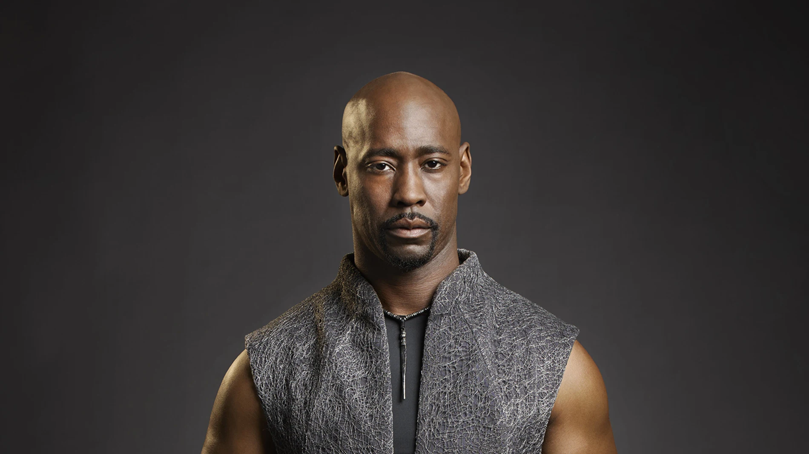
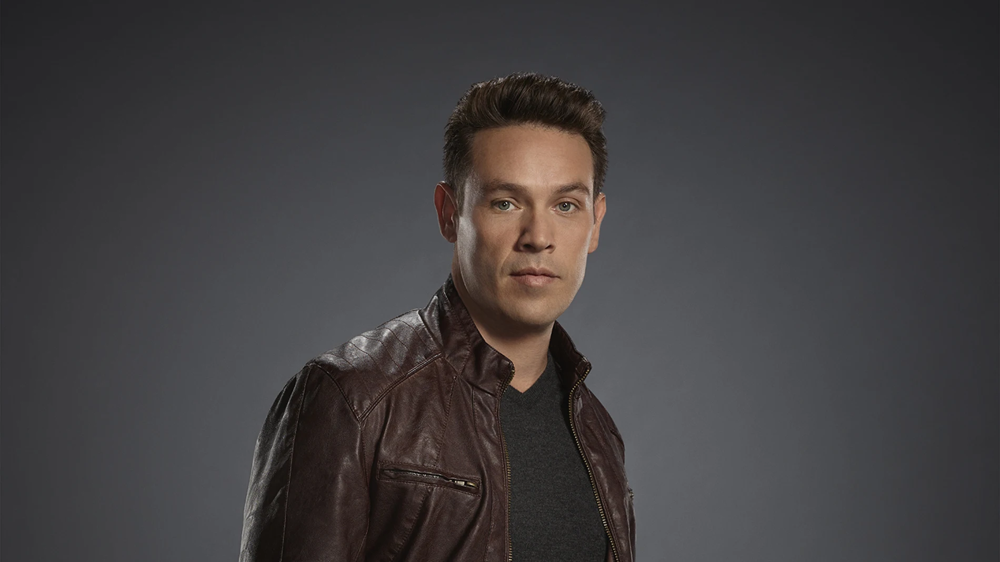

Tom Ellis como Lucifer Morningstar: el Señor del Infierno, que está aburrido de su vida, abandona su trono y se convierte en un consultor civil del Departamento de Policía de Los Ángeles mientras dirige su propio club nocturno de alta gama llamado «Lux».
Lauren German como la detective Chloe Decker: su difunto padre era oficial de policía del LAPD y ella es detective de homicidios. Ella resuelve crímenes con Lucifer después de que él se interesa en ella una vez que parece ser inmune a sus habilidades.
 D. B. Woodside como Amenadiel: un ángel, el hermano mayor de Lucifer y todos sus hermanos. Llega a Los Ángeles para alentar a Lucifer a regresar al infierno, y al fallar, intenta obligar a Lucifer a regresar de diferentes maneras, hasta que se quedó en la Tierra decepcionado con su padre.
 Kevin Alejandro como el detective Daniel «Dan» Espinoza † : un detective de homicidios del LAPD y el exmarido de Chloe. Él es el padre de Trixie
Rachael Harris como la Dra. Linda Martin: la psicoterapeuta de Lucifer educada en Stanford, quien inicialmente acepta «pagos» de él en forma de sexo
Lesley-Ann Brandt como Mazikeen: Confidente y aliada devota de Lucifer Morningstar, «Maze» para abreviar. Ella es un demonio que, habiendo servido como su principal torturadora, lo siguió del infierno a Los Ángeles, y actuó como barman y guardaespaldas en el club de Lucifer. En la segunda temporada, Maze busca una nueva dirección en la Tierra y se convierte en una cazarrecompensas.
 Tom Ellis como Lucifer Morningstar: el Señor del Infierno, que está aburrido de su vida, abandona su trono y se convierte en un consultor civil del Departamento de Policía de Los Ángeles mientras dirige su propio club nocturno de alta gama llamado «Lux».
Tom Ellis como Lucifer Morningstar: el Señor del Infierno, que está aburrido de su vida, abandona su trono y se convierte en un consultor civil del Departamento de Policía de Los Ángeles mientras dirige su propio club nocturno de alta gama llamado «Lux».{kind=link}
{kind=link}
{kind=link}
{kind=link}
{kind=link}